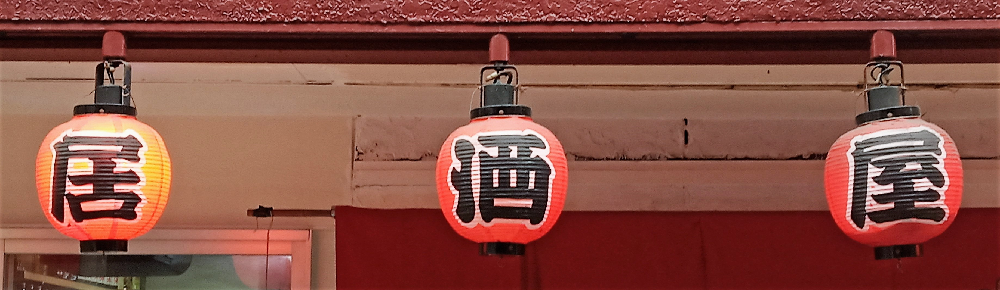

ABOUT
渋くて、あたたかい。
白根の隠れ家。
新潟市南区白根で、地域の方々に長く親しまれてきた食事処。古めながら渋さの漂う店内で、気取らずにゆっくりお過ごしいただけます。

隠れ家の理由
たべどころが「隠れ家」と呼ばれるのには理由があります。ご来店くださった方々の口コミでも、繰り返し語られているのが、この言葉です。
内装は古めながらも渋さが漂い、飾らない大衆酒場らしい空気が流れています。大きな看板を掲げた華やかな店構えではなく、白根の街に静かに溶け込んだ佇まい。だからこそ、知る人ぞ知る「隠れ家」として親しまれてきたのでしょう。
客層は地域に根ざした方々が中心で、接客もかしこまりすぎないフランクなもの。一人でふらりと立ち寄っても、気の置けない仲間と訪れても、同じように迎えてくれる。気取らない距離感の近さも、たべどころらしさのひとつです。
白根という土地について
たべどころがあるのは、新潟県新潟市南区白根。この地域は「白根大凧合戦」で広く知られており、初夏には空を舞う大凧を目当てに多くの人が訪れる土地柄です。
たべどころ自体が大凧合戦に携わっているわけではありませんが、そうした祭りの文化が息づく土地で、地域の方々に長く親しまれてきた食事処です。白根という街の空気ごと味わっていただけたら――そんな一軒です。
※「白根大凧合戦」は地域の文化的背景としてのご紹介です。たべどころが同合戦の主催・協賛等に関わっているものではありません。
過ごし方いろいろ
一人の静かな時間から、大人数の賑やかな一夜まで。
カウンターで、静かに盃を
暖簾をくぐって、カウンターにひとり腰掛ける。毎日仕入れに行っているという刺身をあてに、静かに盃を傾ける時間。一人飲みでふらりと立ち寄る方も少なくないと聞きます。
家族での、にぎやかな食卓
夕方になれば、家族での晩ごはんに訪れる姿も。刺身に鶏の竜田揚げ、甘めの出汁巻き玉子にジャンボ焼鳥――どれも美味しいと、家族でのご来店を喜ぶ声も寄せられています。
宴会で、賑やかなひととき
夜が更けるにつれて賑やかになるのは、宴会の一席。8人ほどの懇親会で訪れた方からは、「部屋も広く」活き造りのお刺身やたっぷりの生野菜、ホタテの出汁が効いたのっぺに「感激した」というお声もいただいています。
一人の静かな時間から、大人数の賑やかな一夜まで。たべどころは、どんな過ごし方も気取らずに受け止めてくれる場所です。